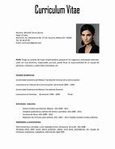
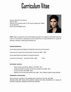

Terminos tecnológicos en ingles y español
Términos español/ingles
Español
Ingles
Imagenes
3D
3D
Librería especializada en el dibujo y diseño de gráficas en la visualización de datos.
Pero, no es tan solo una librería que permite hacer visualizaciones, sino que también nos permite realizar
cualquier tipo de mapeo, operaciones.
Bookstore specialized in drawing and designing graphs in data visualization.
But it is not only a library that allows us to make visualizations, but also allows us to perform
any type of mapping, operations.
Archive
Archivo
Conjunto ordenado de documentos que una persona, una sociedad, una institución, etcétera,
producen en el ejercicio de sus funciones o actividades.
An ordered set of documents that a person, a society, an institution,
etc., produce in the exercise of their functions or activities.
Curriculum
El currículum es un camino para llegar a un objetivo que se va construyendo de modo paulatino
y sistemático. Puede darse en el plano educativo o laboral.
Excel is a computer program developed by Microsoft and is part of Office, which is an
office suite that includes other programs such as Word and PowerPoint. Excel stands out from
all office software because it allows us to work with numerical data..

Excel
Excel es un programa informático desarrollado por Microsoft y forma parte de Office que
es una suite ofimática que incluye otros programas como Word y PowerPoint. Excel se distingue
de todos los programas ofimáticos porque nos permite trabajar con datos numéricos.
The curriculum is a way to reach an objective that is built gradually and systematically.
It can occur in the educational or work field.
Linea
Una sucesión continua de dos o más puntos que se extienden de manera indefinida en un mismo
plano, formando una trayectoria de una o varias direcciones.
A continuous succession of two or more points that extend indefinitely in the same plane,
forming a trajectory of one or more directions.
Meenú
Está hecho para abrirse desde la entrada de un usuario, generalmente un clic con el botón
derecho del mouse, pero los clics centrales o mantener presionado el botón del mouse también
son comunes.
It's made to open from a user's input, usually a right-mouse click, but middle clicks or
holding down the mouse button are also common.
Microsoft
Es un software informático de procesamiento de textos que permite crear, editar, guardar,
formatear, imprimir y compartir documentos de texto en formato digital, con la posibilidad
de incluir imágenes y otros elementos visuales.
Es un software informático de procesamiento de textos que permite crear, editar, guardar,
formatear, imprimir y compartir documentos de texto en formato digital, con la posibilidad de
incluir imágenes y otros elementos visuales.
Reunión
Es una reunión en línea en la que los participantes se conectan a través de plataformas
de videoconferencia para colaborar en tiempo real
It is an online meeting in which participants connect through video conferencing platforms
to collaborate in real-time.

Seleccionar
Se emplea de modo extendido en nuestro idioma para dar cuenta de aquella acción a partir
de la cual se escogen, eligen, de modo cuidado, ya sea cosas o individuos, de entre varias
opciones,correspondientes a su misma especie o categoría.
It is widely used in our language to account for that action from which things or individuals
are carefully chosen, chosen, from among several options, corresponding to the same species or category.
Transicion
Es la acción y efecto de pasar de un estado a otro distinto. El concepto implica un cambio en un
modo de ser o estar. Por lo general se entiende como un proceso con una cierta
extensión en el tiempo.
It is the action and effect of passing from one state to another. The concept implies a change
in a way of being or being.It is generally understood as a process with a certain
extension in time. /
Viñeta
Término que procede del francés vignette y que permite nombrar a los recuadros de una
serie que, con sus dibujos y textos, forman una historieta.
A term that comes from the French vignette and that allows us to name the squares of
a series that, with their drawings and texts, form a comic strip.
Vista previa
Una representación visual previa de un objeto, documento, diseño o contenido antes de su
impresión, publicación o presentación final. En entornos digitales y de edición, la vista
preliminar permite revisar y evaluar cómo se verá el resultado final antes de comprometerse
con la versión definitiva.
A preview visual representation of an object, document, design, or content before
it is printed, published, or presented at the end. In digital and editing environments, the preview
allows you to review and evaluate what the final result will look like before committing to
the final version.

| Términos español/ingles | Español | Ingles | Imagenes |
| 3D 3D | Librería especializada en el dibujo y diseño de gráficas en la visualización de datos. Pero, no es tan solo una librería que permite hacer visualizaciones, sino que también nos permite realizar cualquier tipo de mapeo, operaciones. | Bookstore specialized in drawing and designing graphs in data visualization. But it is not only a library that allows us to make visualizations, but also allows us to perform any type of mapping, operations. | |
| Archive Archivo | Conjunto ordenado de documentos que una persona, una sociedad, una institución, etcétera, producen en el ejercicio de sus funciones o actividades. | An ordered set of documents that a person, a society, an institution, etc., produce in the exercise of their functions or activities. | |
| Curriculum | El currículum es un camino para llegar a un objetivo que se va construyendo de modo paulatino y sistemático. Puede darse en el plano educativo o laboral. | Excel is a computer program developed by Microsoft and is part of Office, which is an office suite that includes other programs such as Word and PowerPoint. Excel stands out from all office software because it allows us to work with numerical data.. |  |
| Excel | Excel es un programa informático desarrollado por Microsoft y forma parte de Office que es una suite ofimática que incluye otros programas como Word y PowerPoint. Excel se distingue de todos los programas ofimáticos porque nos permite trabajar con datos numéricos. | The curriculum is a way to reach an objective that is built gradually and systematically. It can occur in the educational or work field. | |
| Linea | Una sucesión continua de dos o más puntos que se extienden de manera indefinida en un mismo plano, formando una trayectoria de una o varias direcciones. | A continuous succession of two or more points that extend indefinitely in the same plane, forming a trajectory of one or more directions. | |
| Meenú | Está hecho para abrirse desde la entrada de un usuario, generalmente un clic con el botón derecho del mouse, pero los clics centrales o mantener presionado el botón del mouse también son comunes. | It's made to open from a user's input, usually a right-mouse click, but middle clicks or holding down the mouse button are also common. | |
| Microsoft | Es un software informático de procesamiento de textos que permite crear, editar, guardar, formatear, imprimir y compartir documentos de texto en formato digital, con la posibilidad de incluir imágenes y otros elementos visuales. | Es un software informático de procesamiento de textos que permite crear, editar, guardar, formatear, imprimir y compartir documentos de texto en formato digital, con la posibilidad de incluir imágenes y otros elementos visuales. | |
| Reunión | Es una reunión en línea en la que los participantes se conectan a través de plataformas de videoconferencia para colaborar en tiempo real | It is an online meeting in which participants connect through video conferencing platforms to collaborate in real-time. | |
| Seleccionar | Se emplea de modo extendido en nuestro idioma para dar cuenta de aquella acción a partir de la cual se escogen, eligen, de modo cuidado, ya sea cosas o individuos, de entre varias opciones,correspondientes a su misma especie o categoría. | It is widely used in our language to account for that action from which things or individuals are carefully chosen, chosen, from among several options, corresponding to the same species or category. | |
| Transicion | Es la acción y efecto de pasar de un estado a otro distinto. El concepto implica un cambio en un modo de ser o estar. Por lo general se entiende como un proceso con una cierta extensión en el tiempo. | It is the action and effect of passing from one state to another. The concept implies a change in a way of being or being.It is generally understood as a process with a certain extension in time. | /|
| Viñeta | Término que procede del francés vignette y que permite nombrar a los recuadros de una serie que, con sus dibujos y textos, forman una historieta. | A term that comes from the French vignette and that allows us to name the squares of a series that, with their drawings and texts, form a comic strip. | |
| Vista previa | Una representación visual previa de un objeto, documento, diseño o contenido antes de su impresión, publicación o presentación final. En entornos digitales y de edición, la vista preliminar permite revisar y evaluar cómo se verá el resultado final antes de comprometerse con la versión definitiva. | A preview visual representation of an object, document, design, or content before it is printed, published, or presented at the end. In digital and editing environments, the preview allows you to review and evaluate what the final result will look like before committing to the final version. | |